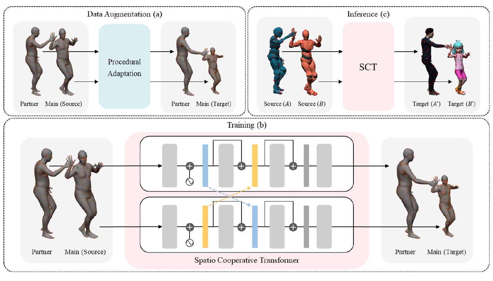
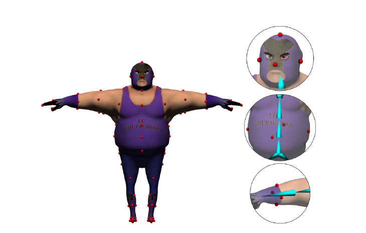
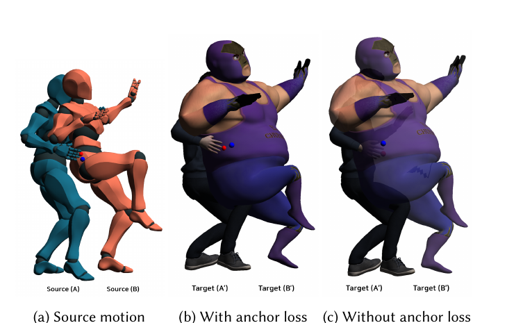
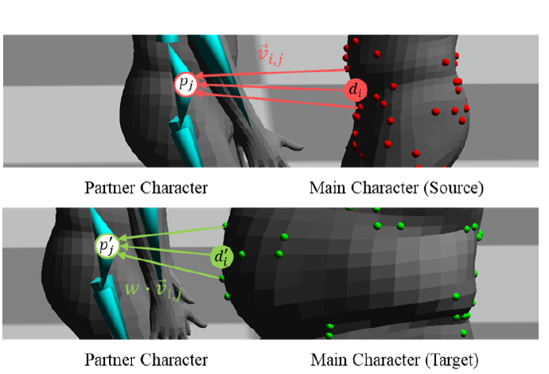
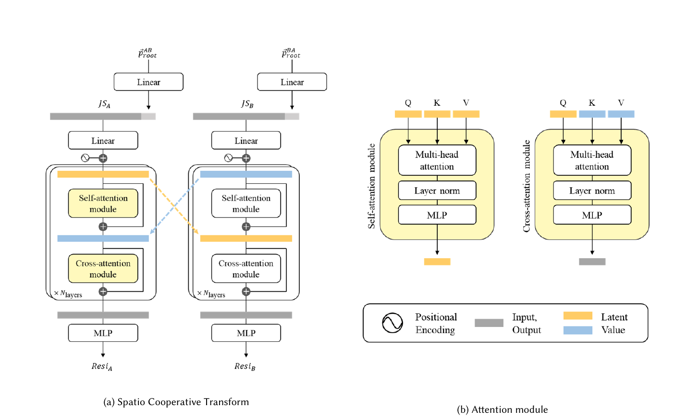

Interactive motion between multiple characters is widely utilized in games and movies. However, the method for generating interactive motions considering the character's diverse mesh shape has yet to be studied. We propose a Spatio Cooperative Transformer (SCT) to retarget the interacting motions of two characters having arbitrary mesh connectivity. SCT predicts the residual of root position and joint rotations considering the shape difference between the source and target of interacting characters.
In addition, we introduce an anchor loss function for SCT to maintain the geometric distance between the interacting characters when they are retargeted. We also propose a motion augmentation method with deformation-based adaptation to prepare a source-target paired dataset with an identical mesh connectivity for training.
In experiments, our method achieved higher accuracy for semantic preservation and produced less artifacts of inter-penetration between the interacting characters for unseen characters and motions than the baselines. Moreover, we conducted a user evaluation using characters with various shapes, spanning low-to-high interaction levels to prove better semantic preservation of our method compared to previous studies.

Overview of our method. In the data augmentation stage (a), we prepare paired data using characters with the identical mesh connectivity, where orange points on the SMPL model represent the descriptors. In the training stage (b), SCT is trained using the prepared data in a supervised manner. In the inference stage (c), retargeting is performed on characters with different mesh connectivities. Red points on the characters represent the anchor points.

Anchor positions (red points) are automatically extracted per joint for characters with diverse mesh connectivities and body shapes.
An anchor is a sparse and representative set of vertices on the surface of the character's mesh, specified for each joint. Because the anchors are located at representative body parts, the distance between two anchors from two different joints represents the geometric distance between those joints — regardless of the underlying mesh connectivity.
Unlike prior approaches that rely on manually pre-specified markers on the body surface, our method automatically identifies representative anchor locations of skinned characters with diverse mesh connectivities and body shapes. This automatic process leads to consistent retargeting results, because the anchor positions remain semantically the same across different characters, eliminating the need for each user's judgment when specifying anchors.
By matching the anchor distance between the interacting source characters to that between the target characters, geometric semantics such as contact can be properly maintained, preventing interpenetration and contact-missing artifacts.
The anchor loss minimizes the difference between the anchor distance maps of the source and target characters, weighted so that closer anchors exert a greater influence. The red point is the anchor on the hand of character A, and the blue point is the anchor on the waist of character B.
When SCT is trained with the anchor loss (b), the distance between the two anchors observed in the source motion is maintained, producing proper contact on the chubby target character. Without the anchor loss (c), the hand of character A' penetrates into the belly of character B'.

Source motion (a) retargeted with the anchor loss (b) and without it (c). The target character B' is presented transparently to show interpenetration.
Because paired interaction data of two characters is difficult to obtain, we augment the training dataset via a deformation-based motion adaptation. Using the SMPL model as a template, we scale the bone lengths (0.7–1.2) and vary the shape parameters (-10–10) to reshape the body mesh, covering a wide range of body proportions from short to tall and skinny to bulky.
When the main character is deformed, the pose of the partner character is adjusted with a relationship-descriptor method: the joint positions of the partner are updated by the weighted sum of relational vectors from descriptors on the main character, so that the semantic context of the interaction is preserved under geometric changes. The resulting source-target pairs with identical mesh connectivity enable supervised training of SCT.

Deformation-based adaptation adjusts the target pose according to the change of shape: the difference of descriptor positions on the belly of the source and target characters affects the position of the partner character's joint.

SCT consists of two symmetric branches of transformer-based networks cooperating to predict the motion residual for each character. Each joint state — bone offset, bounding-box size, joint rotation, and root-relative position — is embedded as a token. A self-attention module extracts the spatial feature of each character's own pose, and a cross-attention module exchanges features between the two interacting characters, so that the predicted root position and joint rotations account for both characters' shapes. At inference, SCT generalizes to characters with different mesh connectivities.
@article{jang2024geometry,
author = {Jang, Inseo and Choi, Soojin and Hong, Seokhyeon and Kim, Chaelin and Noh, Junyong},
title = {Geometry-Aware Retargeting for Two-Skinned Characters Interaction},
year = {2024},
issue_date = {December 2024},
publisher = {Association for Computing Machinery},
address = {New York, NY, USA},
volume = {43},
number = {6},
issn = {0730-0301},
url = {https://doi.org/10.1145/3687962},
doi = {10.1145/3687962},
journal = {ACM Trans. Graph.},
month = nov,
articleno = {203},
numpages = {17},
keywords = {character animation, motion retargeting, two character interaction}
}